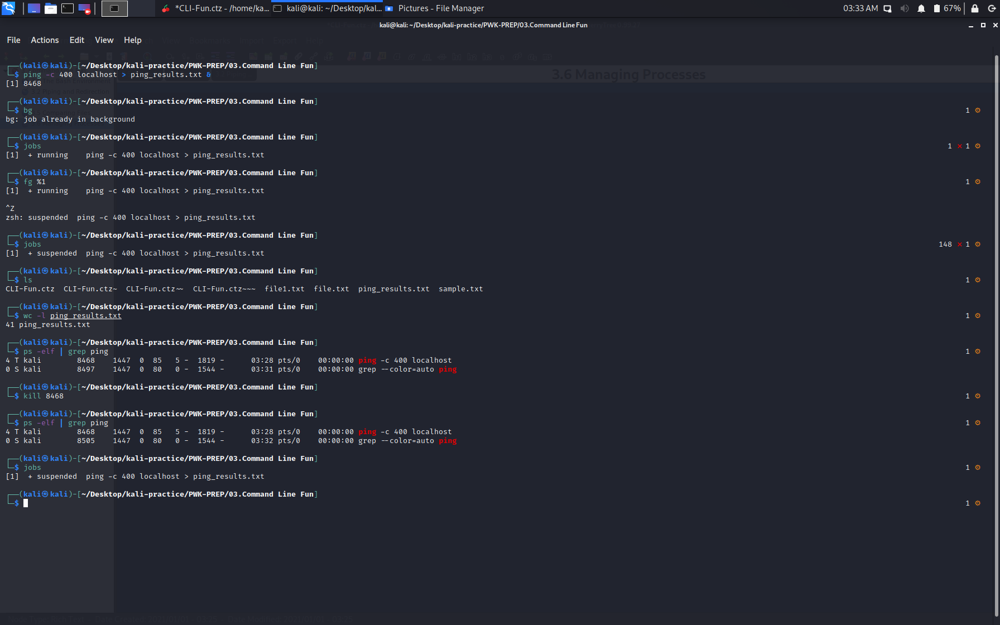

3. Command Line Fun
Bash is an sh-compatible shell that allows us to run complex commands and perform different tasks from a terminal window. 3.2 Piping and Redirection
3.3 Text Searching and Manipulation
3.6 Managing Processes
 3.7 File and Command Monitoring